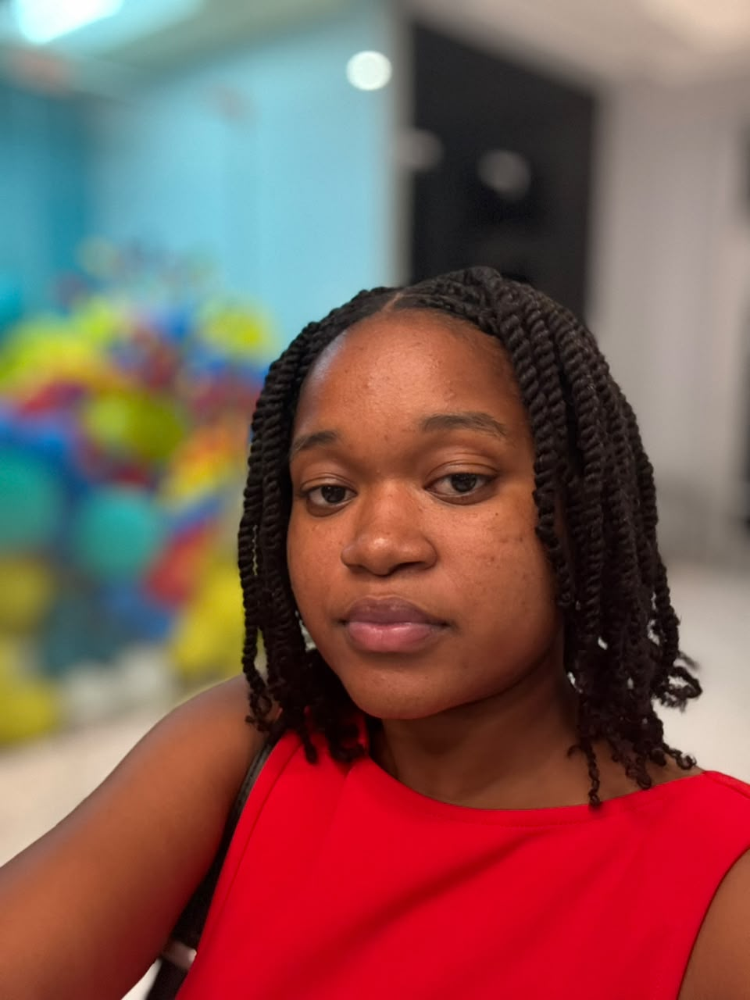
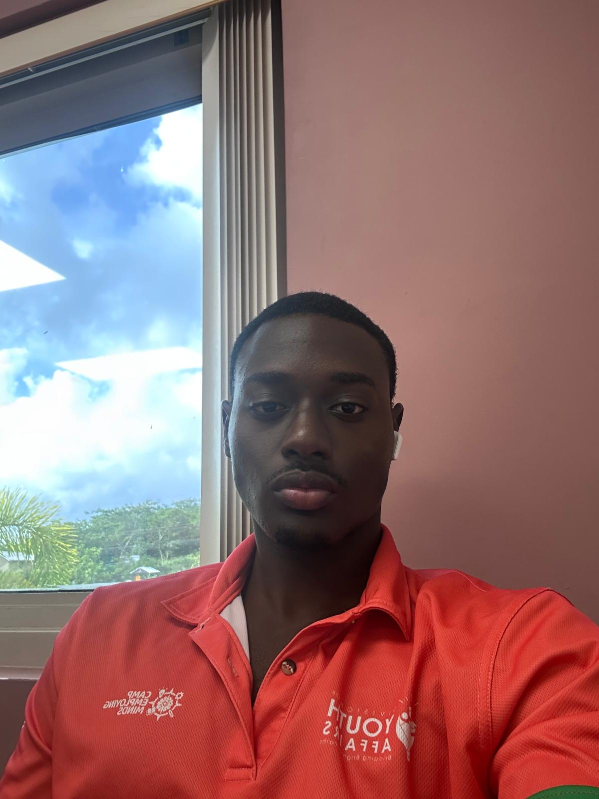

Joyella Williams
Project Manager
SkyCast246 is a student-built educational website that helps learners identify cloud types and explore weather concepts, with a focus on Barbados and the Caribbean.
Our goal is to make cloud learning more interactive by combining image classification using Google Teachable Machine with cloud facts, a short quiz, and an AI assistant powered by Microsoft Copilot Studio.
SkyCast246 is an educational prototype. Its image predictions are estimates and should not be treated as weather forecasts.
Meet the four students working together on SkyCast246.

Project Manager
Programmer

Documentalist
Programmer